Old Town · Tbilisi
34 Kote Abkhazi St
Daily 10:00 – 23:00
Get directions →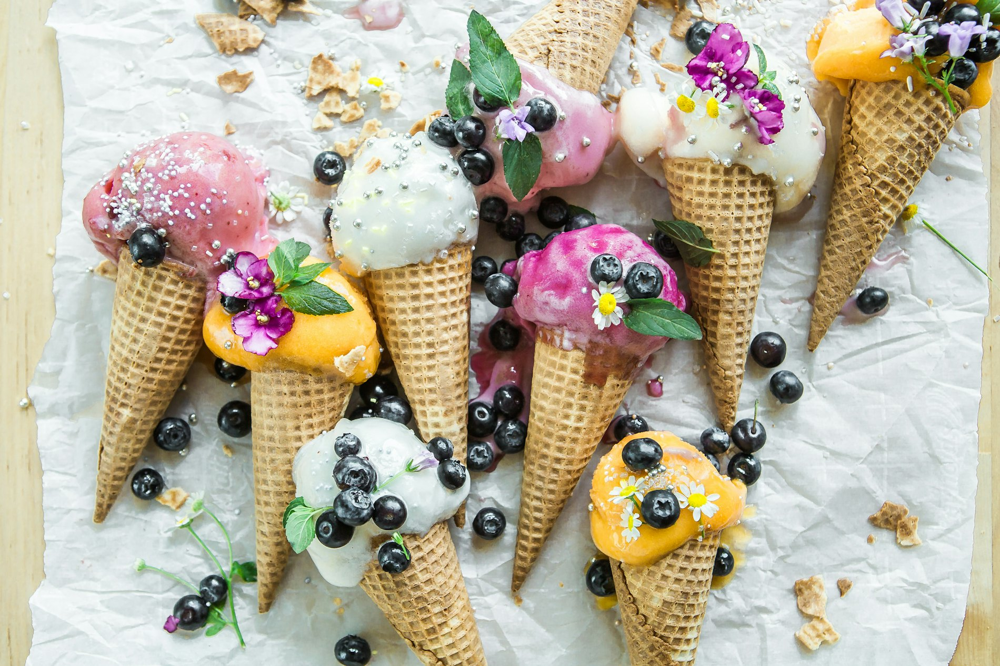
Artisan gelateria — Tbilisi · Batumi
Fresh milk every morning, fruit in season, and recipes we brought home from Italy in 2008. Churned in small batches, served the same day.
Delivered each morning from farms outside the city. Never powdered, never reconstituted.
Season-ripe fruit, roasted nuts, true vanilla and cocoa. Nothing artificial — it simply isn't needed.
Recipes learned in Italian workshops, kept alive here — batch by batch, since 2008.
Small batches made through the day, so what lands in your cone was frozen hours ago — not weeks.
The counter
Our case holds up to sixty flavours through the year, following what the orchards and markets bring. These are the signatures our regulars won't let us retire.
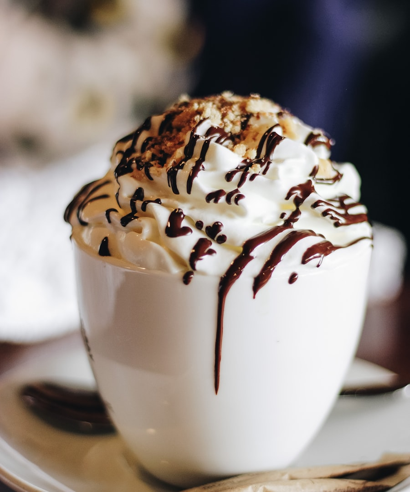
Whole vanilla pods steeped overnight in fresh milk — quiet, round, and anything but plain.
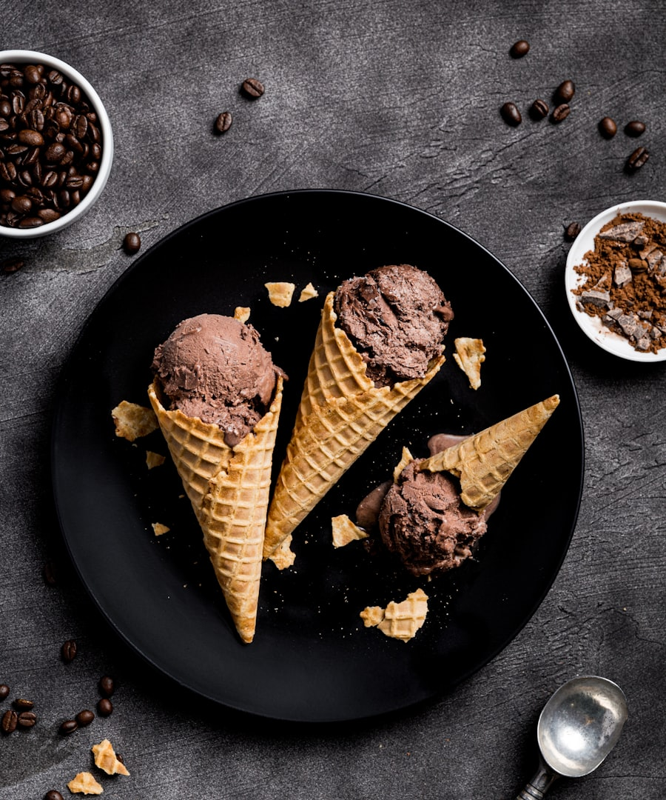
Deep single-origin cocoa churned slow for a dense, almost sorbet-dark finish.
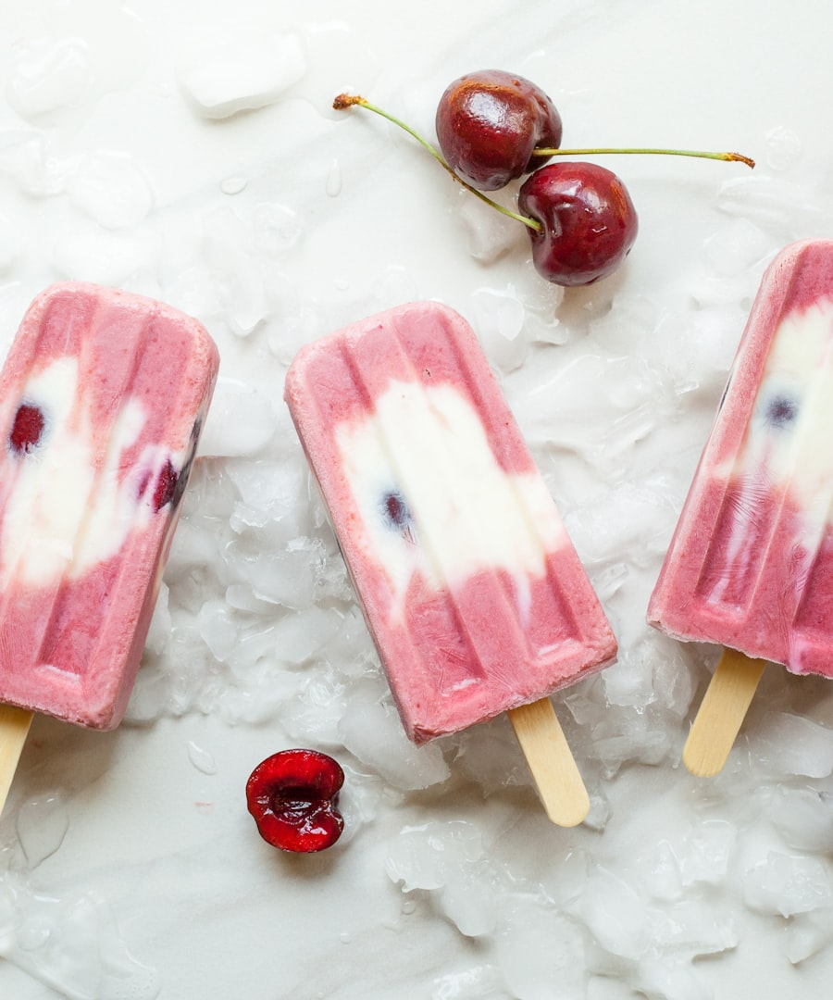
Sour Amarena cherries folded through sweet cream — the recipe we've never changed.
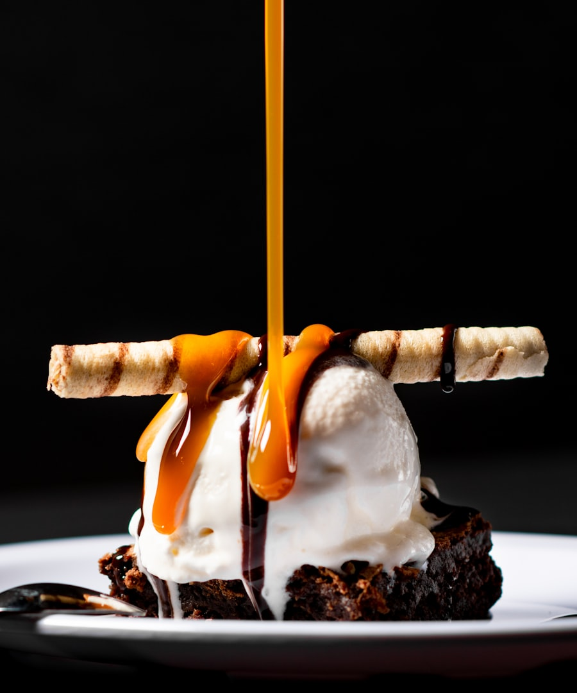
Burnt-sugar caramel with hazelnuts and walnuts roasted in our own kitchen.
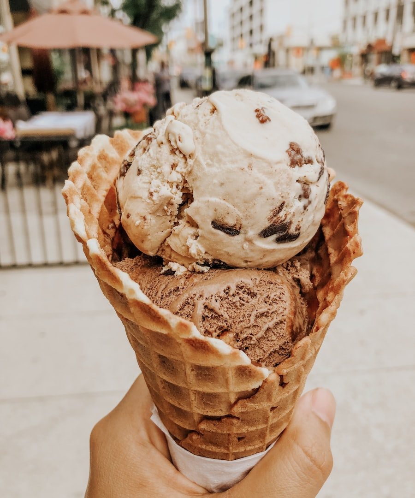
Cold cream laced with shards of dark chocolate, cracked in by hand as it churns.
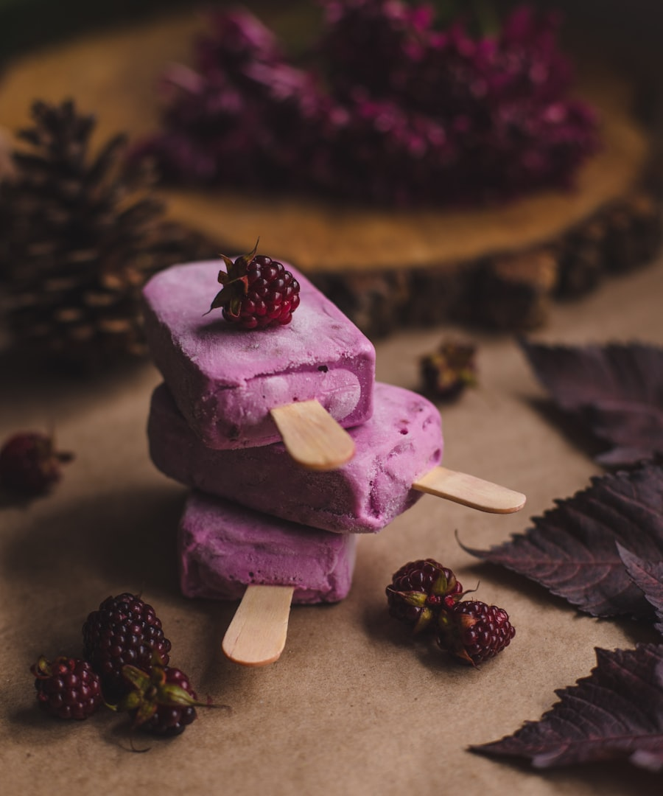
Georgian mountain blackberries at their late-summer peak, and very little else.
Vegan sorbets, sugar-free scoops and fresh coffee are always in the case — ask what's churning today.
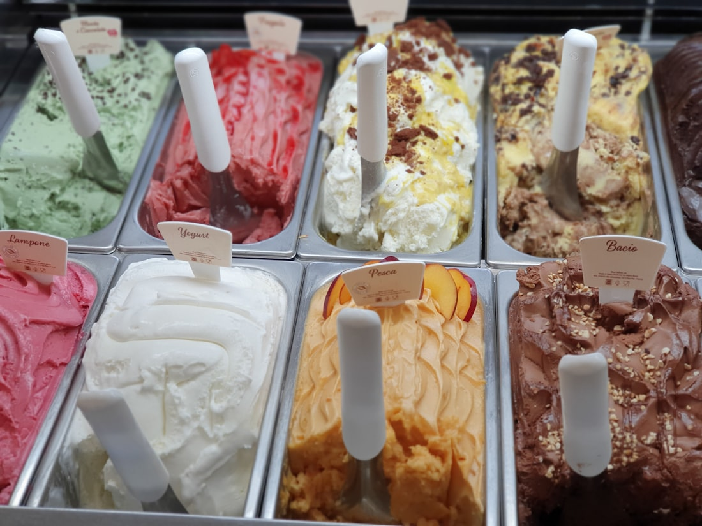
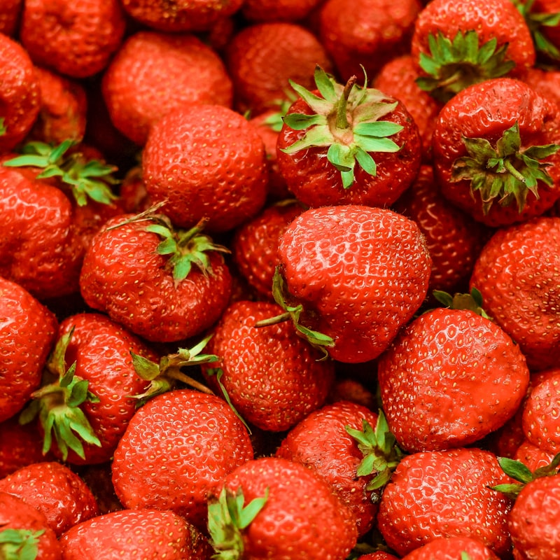
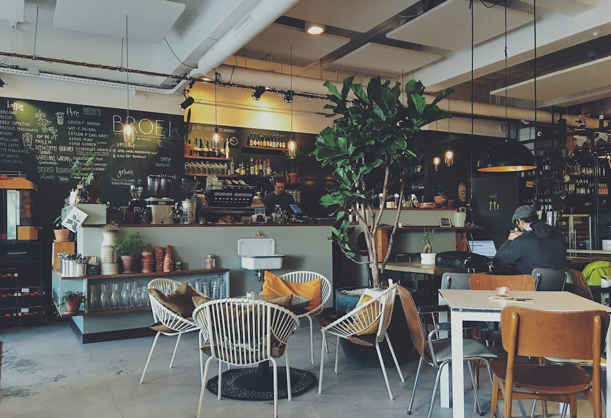
Our story
Luca Polare began as one small shop on a cobbled street in Tbilisi's Old Town, with a churner, a fridge full of morning milk, and a stack of recipes carried back from Italy.
Not much has changed. The fruit still comes from the market, the nuts are still roasted in-house, and every flavour is still made in batches small enough to taste before it reaches the case. What's grown is the family around it — the regulars, the first-dates, the kids pressed against the glass deciding between sixty kinds of happiness.
Come for a cone. Stay for a coffee. That's the whole idea.
Word of mouth
“The most delicious gelato I've had outside of Italy. The pistachio actually tastes like pistachio — you can tell everything is made from real ingredients.”
“Such a cozy place. We came for ice cream and stayed two hours talking over coffee. The staff remember our order by now.”
“An unbelievably wide variety — every visit there's something new in the case. The seasonal fruit sorbets are the ones to watch for.”
“Everything tastes fresh and natural — you can taste the milk, the fruit, the care. My kids ask to come here every single weekend.”
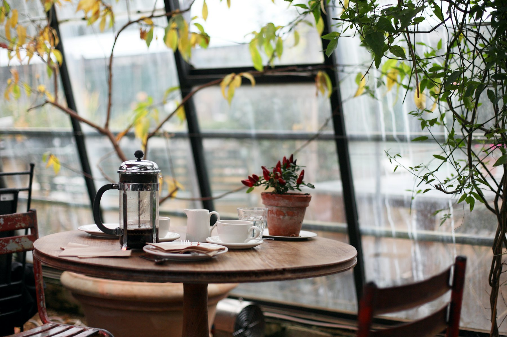
Visit us
Every café churns its own gelato on site, all day. Drop by for a scoop, a slow coffee, or both.
34 Kote Abkhazi St
Daily 10:00 – 23:00
Get directions →60 Chavchavadze Ave
Daily 10:00 – 23:00
Get directions →Batumi Boulevard
Daily 10:00 – 24:00
Get directions →